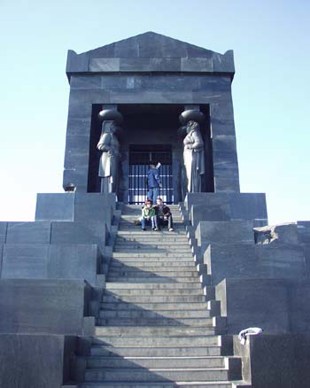
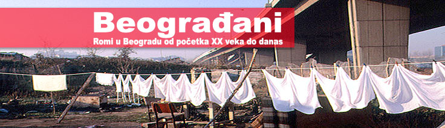

Čitanka: Beograd
Volim da citam o gradovima. Posebno o onim gradovima u kojima sam bila. Jer mogu na neki nacin da se povežem sa pricom. Naravno, neki me zainteresuju i bez da sam ih posetila. O Njujorku je vec toliko ljudi pisalo, pricalo, snimalo, da je samo ostalo da se actually i ode. Zanimljivo je i kad pred neki put upijaš sve informacije o tom nekom gradu, i stvaraš neku sliku, a onda se vlastiti utisci slože, nešto se potvrdi, nešto ispadne drugacije, a opet, sve je korisno.
Posebnu kategoriju predstavlja citanje o gradu gde stalno boraviš. Eto na primer o Beogradu. Ima tu svega, i boljeg i goreg. Mada mi se cini da taj žanr nešto više i nije aktuelan kao 90-ih. Drugacije su okolnosti, pa je i prirodno.
Evo nekih BeGe zapisa. Najskoriji, Srdan Valjarevic, 'Dnevnik druge zime':
"Volim kad je grad pust. Lepo je. Kad nema mnogo ljudi. Tad možeš lepo da ga gledaš, taj grad. Jer, kad je mnogo ljudi, onda ne vidiš grad. A ovaj grad je lep...lepo prljav i mali, zapušten i olinjao, ima u njemu baš mnogo onog što se zove levo-desno i onog gore-dole, baš dovoljno toga, tih pravaca, ulica, i ima dovoljno i zelenog i dovoljno sivog, i nešto manje drugih boja, alii ipak ima dovoljno svega, pa kroz sve to kad prođeš i spustiš se na reku, bilo koju od dve, vidiš ga lepo, još lepše, sa svim onim starim visokim kranovima i dizalicama, dobar je, izmrcvaren, ali dobar, nije on kriv, nije on birao sastav ljudi, koji su dolazili i odlazili, nije on birao ovakav svet, jedino onaj koji mu je davno izabrao da ga jednom baš ovde ljudi naprave, baš na ovom mestu, i da bude baš ovakav, ne baš srećan grad, ali sasvim dobar i dovoljno lep, e taj je znao razlog svemu tome."
A nadjoh i neke starije.
Evo npr. iz 'Beogradskih putopisa' (price raznih autora), knjiga je iz '94.
"Secam se jutra kada sam otputovao. Bio je dvadeseti oktobar, dan oslobodenja Beograda. I ja sam se oslobadao, cekajuci poletanje koje je bilo odloženo zbog dolaska turskog predsednika. Bar su nam tako rekli. Tada nisam znao da ce moje oslobadanje trajati, evo, vec dvanaest godina. I da ce se u meduvremenu desiti to što se desilo. Jer ja sam se tada oslobadao onog sitnog, mracnog i caršijskog što je oteralo i druge Beogradane iz Beograda. Onoga što je cinilo da se osecam krivim što hocu da pišem i što necu da provodim noci s pijanim urednicima naše narodne književnosti. I naravno, kao i svako putovanje, ovo je obecavalo da cu se osloboditi barem jednog dela sebe samog." (Tomislav Longinovic)

Još stariji citat je iz 'Beogradskih prica' (opet šarena zbirka). Iz '91. godine:
"Najhitrijim korakom na svetu, prelazio sam rastojanje od škole do moje ulice. Onima koji ne poznaju Cuburu, odmah saopštavam kako je to rastojanje tri puta vece od dužine sam eulice. Možda je to najkraca ulica u Beogradu i, baš zbog svog maloletstva, tri puta je menjala ime u posleratnom periodu vladavine komunistickih urednika. Govorim o mojoj, Kotorskoj. Mada, i njena starija sestra, Makenzijeva, prešla je isti put.
NAROD NEMA ŠTA DA JEDE!
PROMENI IME ULICI." (Milan Oklopdžić)
A za Beograd i Beograđane u slici, Rex projekat.
Komentari
Slažem se sa S.V. - svaki grad kad nedeljom ujutro osvane pust i nezaprljan ljudima pokaže neko svoje idealno lice, sasvim drugačije od onog koje vidiš tokom nedelje. Onda možeš da ga u svojoj glavi popuniš ljudima kakvim ti želiš - kulturnim, obrazovanim, veselim, šarenim - i uživaš u tome dok te ponedeljak ujutro ne vrati u stvarnost. Najčešće surovu.
 ubipacijentic | 09.10.06 17:14
ubipacijentic | 09.10.06 17:14
Prosetah sa Valjarevicem vala po svim Bg ulicama, iako ne zivimu u tom lepom gradu. I ne umorih se :)
etotako | 09.10.06 20:33
'nezaprljan ljudima'? Ubi, sta se desava?
Elej bejb | 09.10.06 22:26
Parafraziram S.V.
ubipacijentic | 10.10.06 14:00
Beograd mi je ostao u lijepom sjećanju, interesntna stvar, ne volim kad o Dubrovniku čitam beletristiku, pogotovo kad pisac ne poznaje grad, pa lupa svašta, izmišlja lokacije, ili još gore smjesti ih na krivo mjesto, pravo me to nervira... a jesam picajzla
 samba | 10.10.06 14:01
samba | 10.10.06 14:01
A da li znas za ovaj sajt: http://www.biojednomjedanbeograd.com/ ? :)
 RSS feed
RSS feed
 sadržaji se objavljuju pod
sadržaji se objavljuju pod
Dobar je ovaj Srdjan Valjarevic, majke mi. Sad citam bas nesto od njega gde opisuje Amsterdam, isto tako dobro kao i Bg. Nisam jos citao "Dnevnik..."
A od Mike Oklopa nikad dosta citata, isecaka...
Hvala, LaLara!
Viktor | 09.10.06 10:49